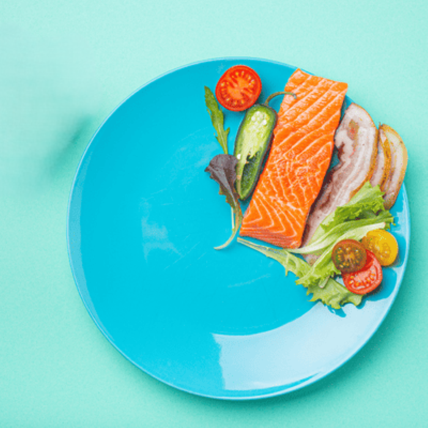
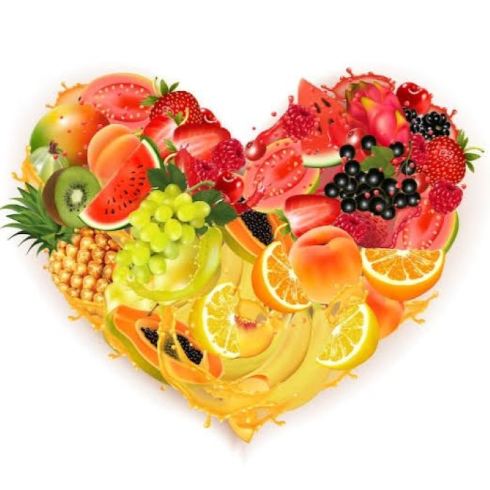

En un mundo cada vez más acelerado y desconectado de sus raíces primigenias, Coliberry nace como una respuesta profunda a la necesidad humana de reencontrar el equilibrio entre el cuerpo, la mente y la tierra. No se trata simplemente de una marca comercial, sino de una filosofía de vida que entiende que la verdadera salud no se fabrica de manera mecánica, sino que florece de forma orgánica cuando volvemos a hundir las manos en el sustrato. La premisa fundamental es que cultivar nuestro entorno es, en esencia, cultivarnos a nosotros mismos. Vivimos rodeados de estímulos artificiales y ritmos industriales que agotan nuestra psique y debilitan nuestro cuerpo, olvidando que somos seres biológicos diseñados para latir al mismo compás que la naturaleza y sus estaciones.
Coliberry propone un retorno a esa verdad ineludible, ofreciendo un ecosistema integral donde la jardinería, el consumo de productos puros y la creación de santuarios botánicos personales se convierten en terapias tangibles para el alma y el organismo. Cuando una persona decide sembrar una semilla, no solo está plantando un futuro alimento o una flor; está practicando el arte milenario de la paciencia, observando cómo la vida se abre paso a través de la oscuridad del suelo, un proceso que actúa como un poderoso ancla mental contra la ansiedad y el ruido de la era moderna.
Esta conexión táctil y física con la tierra, el cuidado diario y el respeto por los ciclos naturales restauran la paz interior y nos enseñan que los procesos más valiosos requieren tiempo, alejándonos de la tiranía de la gratificación instantánea. A nivel físico, esta comunión se traduce en una nutrición auténtica, libre de artificios, donde cada nutriente absorbido proviene de un suelo sano, respetado y lleno de vitalidad, fortaleciendo nuestro cuerpo desde sus propios cimientos celulares.
El propósito final de Coliberry es inspirar a que cada individuo construya su propio refugio vivo, ya sea en la inmensidad de un terreno abierto o en el rincón de un balcón urbano, transformando ese espacio en un organismo que respire y evolucione junto a él. Así, el bienestar integral deja de ser un concepto abstracto para convertirse en un viaje continuo y profundamente orgánico, un relato vivo donde la salud mental y física se entrelazan como las raíces de un bosque antiguo que se aferra con fuerza y sabiduría a la vida.
Recuperá el control de tu vida, encontrando la paz en el silencio.

Pierda grasa corporal reduciendo la cantidad de alimentos.
El movimiento es una medicina para crear el cambio físico, emocional y mental.

Ingredientes reales para personas reales con ganas de vivir más y mejor